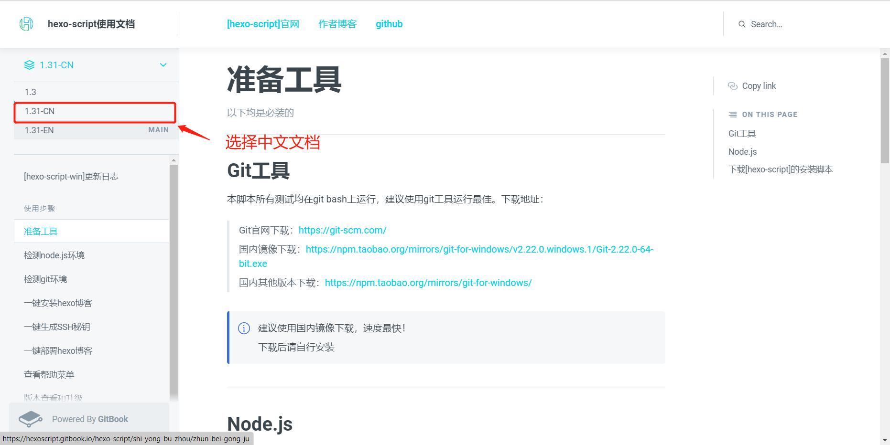
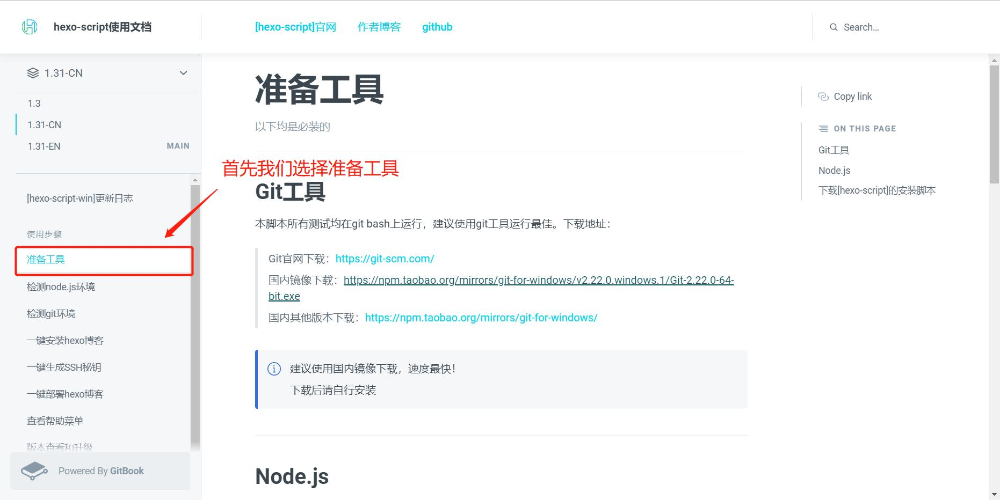

用hexo、git、搭建第一个个人博客网站
1.hexo、git
1.1什么是hexo
- 官网：hexo.io
Hexo 是一个快速、简洁且高效的静态博客框架，它基于 Node.js 运行，可以将我们撰写的 Markdown 文档解析渲染成静态的 HTML 网页。
1.2什么是git
Git（读音为/gɪt/）是一个开源的分布式版本控制系统，可以有效、高速地处理从很小到非常大的项目版本管理。 [1] 也是[Linus Torvalds](https://baike.baidu.com/item/Linus Torvalds/9336769?fromModule=lemma_inlink)为了帮助管理Linux内核开发而开发的一个开放源码的版本控制软件。
2.环境搭建
- hexo-script使用说明文档：https://hexoscript.gitbook.io/
2.1选择中文文档

2.2点击准备工作

2.3下载git工具

进入官网后点击下载

根据自己的需求来下载32位或者64位的git

下载完毕后进行安装，一直点下一步即可。


等待安装

安装成功

2.4下载Node.js


检测PATH环境变量是否配置了Node.js，点击开始=》运行=》输入”cmd” => 输入命令”path”，输出如下结果：
PATH=C:\oraclexe\app\oracle\product\10.2.0\server\bin;C:\Windows\system32;
C:\Windows;C:\Windows\System32\Wbem;C:\Windows\System32\WindowsPowerShell\v1.0\;
c:\python32\python;C:\MinGW\bin;C:\Program Files\GTK2-Runtime\lib;
C:\Program Files\MySQL\MySQL Server 5.5\bin;C:\Program Files\nodejs\;
C:\Users\rg\AppData\Roaming\npm我们可以看到环境变量中已经包含了C:\Program Files\nodejs\
检查Node.js版本

2.5下载[hexo-script]的安装脚本
你只需要在某个目录下,打开git bash然后执行下面这条命令即可下载完成
curl -O https://cdn.jsdelivr.net/gh/kjhuanhao/hexo-script@master/install.sh我们更建议直接在releases下载,选择最新版本,只需下载install.sh即可

建议新建一个目录存放此安装脚本,最好是你想存放博客文件的地方.
如图:我创建了一个[myblog]文件夹,然后在此文件夹下右键打开git bash

然后运行了下载命令,安装脚本(install.sh)就会下载在你的当前文件夹中

3.检测node.js环境
test_node的使用
在存放install.sh脚本的目录中,右键打开git bash然后运行以下命令:
source install.sh test_node如果出现了如图的情况证明环境变量是配置成功的
(出现了版本号和成功的提示信息代表配置成功)
如果你并发现有版本号的出现,而是红色的错误信息,你可能需要手动配置node.js的环境变量,或者重新安装node.js并注意勾选Add to PATH
4.检测git环境
test_git的使用
如果你想要检测git环境或者查看当前git的版本号,您可以在存放install.sh脚本的目录中,右键打开git bash运行以下命令:
source install.sh test_git一般情况下安装git工具后git环境是会自动配置的,可以无需检测git环境.此脚本可以用于linux系统,出现版本号信息则配置为成功.

5.一键安装hexo博客
hexo_win的使用
您需要在存放install.sh脚本的目录中,右键打开git bash运行以下命令:
source install.sh hexo_win提示:此时你可以去来一杯卡布奇诺,大约两分钟的时间,博客即可自动安装完成,如图:

当您看到出现Please run hexo s to check it out!的提示,证明您已经安装成功,此时你可以运行hexo s 然后查看你的博客
cd hexoblog
hexo s注意:要先cd到hexoblog目录哦!执行以上命令即可

可以看到出现了一段地址:http://localhost:4000
在浏览器访问:http://localhost:4000 ,你就可以在本地预览了,浏览情况如图: